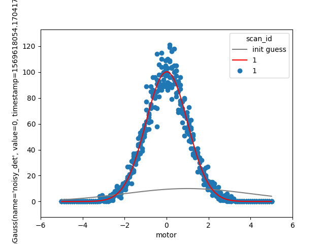

Note
Click here to download the full example code
Re-scan until fit achieves desired confidence¶
Problem¶
Scan a peak and, in real time, fit Gaussian model to the data. Repeatedly re-scan the same region until the uncertainty in the Gaussian width parameter, sigma, is below some threshold.
Approach¶
Use bluesky.callbacks.LiveFit() and bluesky.callbacks.LiveFitPlot() to perform and
visualize a non-linear least-squared fit.
Normally we would use plans.scan() to perform the 1D scan. In this case,
we need something more sophisticated to incorporate adaptive logic that
continues the scan until the fit attains sufficient confidence in sigma. We
write our scan logic using the lower-level plans bluesky.plans.abs_set() and
bluesky.plans.trigger_and_read().
Example Solution¶
import matplotlib.pyplot as plt
import numpy as np
import lmfit
import bluesky.plans as bp
import bluesky.preprocessors as bpp
import bluesky.plan_stubs as bps
import bluesky.callbacks as bc
import bluesky.utils as bu
from ophyd.sim import motor, SynGauss
from bluesky import RunEngine
# Do this if running the example interactively;
# skip it when building the documentation.
import os
if 'BUILDING_DOCS' not in os.environ:
from bluesky.utils import install_qt_kicker # for notebooks, qt -> nb
install_qt_kicker()
plt.ion()
noisy_det = SynGauss('noisy_det', motor, 'motor', center=0, Imax=100,
noise='poisson', sigma=1)
RE = RunEngine({})
def errorbar(lmfit_result, param_name):
# width of 95% conf interfal:
ci = lmfit_result.conf_interval()
return ci[param_name][-2][1] - ci[param_name][1][1]
def gaussian(x, A, sigma, x0):
return A * np.exp(-(x - x0)**2 / (2 * sigma**2))
model = lmfit.Model(gaussian)
guess = {'A': 10,
'x0': 1,
'sigma': lmfit.Parameter('sigma', 3, min=0)}
def scan_gaussian(detectors, motor, start, stop, num, *, ax=None,
err_thresh=0.03):
if ax is None:
ax = plt.gca()
main_detector = detectors[0]
main_motor_field, *_ = motor.describe()
lf = bc.LiveFit(model, main_detector.name, {'x': main_motor_field}, guess)
lfp = bc.LiveFitPlot(lf, color='r', ax=ax)
lp = bc.LivePlot(main_detector, main_motor_field,
linestyle='none', marker='o', ax=ax)
@bpp.subs_decorator([lfp, lp])
@bpp.stage_decorator(list(detectors) + [motor])
@bpp.run_decorator()
def plan():
while True:
for step in np.linspace(start, stop, num):
yield from bps.abs_set(motor, step, wait=True)
yield from bps.trigger_and_read(list(detectors) + [motor])
yield from bps.checkpoint()
err = errorbar(lf.result, 'sigma')
if err < err_thresh:
break
yield from plan()
RE(scan_gaussian([noisy_det], motor, -5, 5, 100, ax=plt.gca()))
Total running time of the script: ( 1 minutes 0.407 seconds)